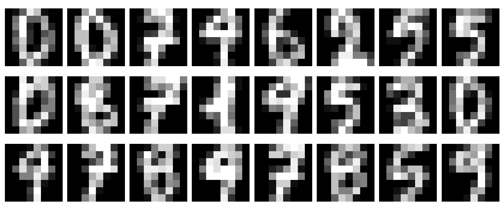
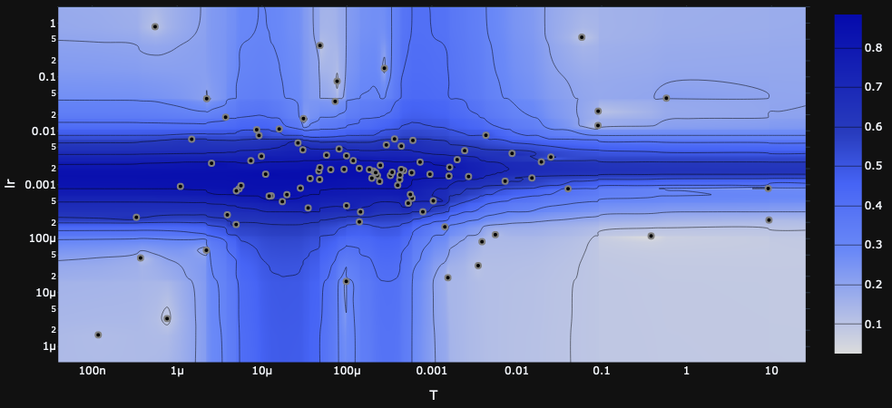
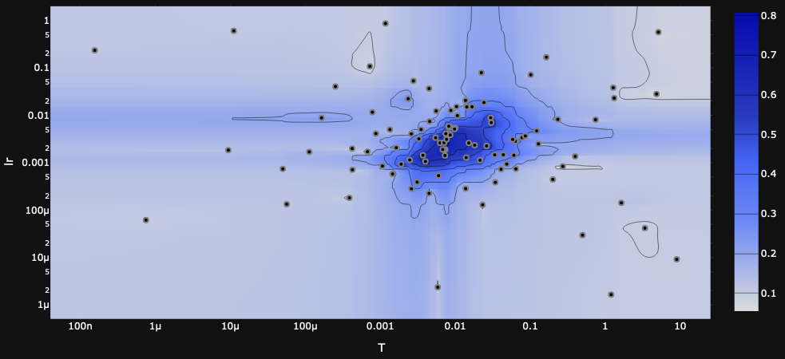
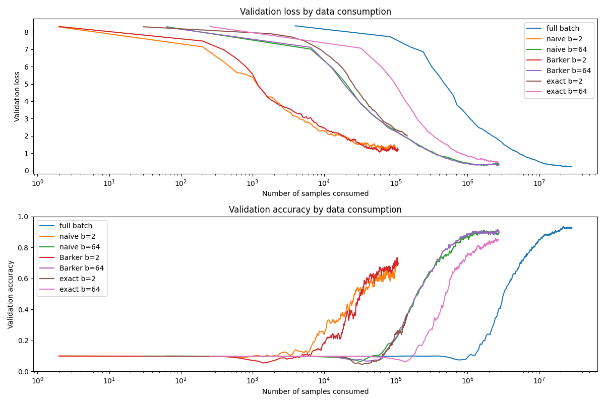
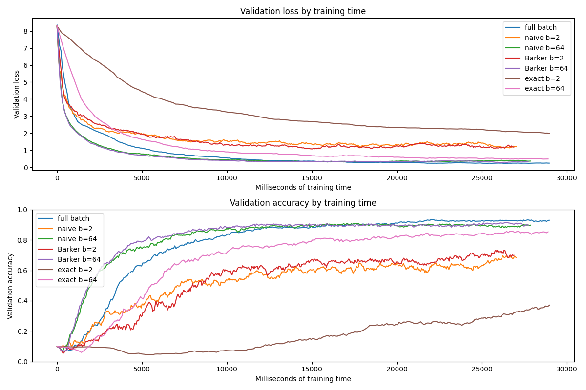

In Part I we established the most basic sanity test for a machine learning algorithm---that it is able to fit data, at all. In this installment, we'll implement a big pratical improvement over that basic algorithm: minibatches.
Recall that our Metropolis-Hastings optimizer works by randomly perturbing the model parameters, computing the loss for the new parameters, and then accepting or rejecting the new parameters with probability $e^{({\tt old\_loss}\, -\, {\tt new\_loss})/T}$ for temperature $T$. So, accepting with probability 1 if the new loss is better and approaching 0 as the new loss gets worse.
Our original optimizer computed the loss using the full dataset, which worked great for our toy dataset of 500 data points, but stops being very practical as the dataset gets larger. Instead, we want to evaluate each proposal based off a minibatch of data.
Naive Minibatch MH
The simplest way to do this is to just do it: evaluate the loss on a minibatch, keep everything else the same.
Actually keeping everything else the same did introduce one ``bug'' which hung me up for a while. In the full-batch algorithm, when we accept a sample we save the loss to test future proposals against, as re-computing it would simply be duplicated work. However, in the minibatch case, the model will see a different minibatch each time, so re-computing the loss will give different results, and this has a significant impact on performance.
Intuitively, it makes sense to re-compute the loss so that the current model and the proposal are competing on equal terms. And practically, what seems to happen if we re-use rather than re-compute is that, every now and then by coincidence, the proposal and minibatch will align to give an extraordinarily good loss. The loss is saved but that minibatch disappears forever,
If you're shuffling your minibatches, then e.g. in a modest dataset with 5000 samples and minibatch size 64, you have ${5000 \choose 64}=\frac{5000!}{4936!*64!}\sim 2.8\times 10^{147}$ possible minibatches; long odds of seeing the same one ever again.
and according to every other minibatch the loss is still high, so future proposals can't match up, acceptance rate drops to zero, and the training gets (semi-)permanently stuck.
And this already works ok!
def _naive_step(self, X, y, batch_size):
"""Step the optimizer using naive minibatch test"""
proposal = self.propose()
X_batch, y_batch = self.draw_minibatch(X, y, batch_size)
logratio = self.compute_logratio(proposal, X_batch, y_batch, reduction='mean')
# acceptance test
ratio = np.exp(logratio / self.T)
u = self.rng.uniform(0,1)
accept = u < ratio
if accept:
self.model.set_parameters(proposal)
Yes I'm numbering these footnotes by hand, and no I'm not going to go back through and renumber them all. What of it?
But there is an important caveat to consider. This approach is quite sensitive to batch size---for example, it's hard to get good results with a batch size of 1. We can understand why this is by drilling down a bit into what the Metropolis-Hastings algorithm is doing for us.
From a theoretical point of view, the Metropolis-Hastings algorithm is generating samples from a distribution. The distribution we're interested in modeling is the density function $p(\theta\vert \{x_i\})$, the likelihood given to a certain set of model parameters $\theta$ conditioned on the dataset $\{x_i\}$. We compute this using Bayes' rule, and after some simplifying assumptions,
Applying Bayes' rule we have
$$
p(\theta\vert\{x_i\})=\frac{p_0(\theta)p(\{x_i\}\vert\theta)}{p(\{x_i\})}.
$$
where $p_0(\theta)$ is our prior. Assuming that $\{x_i\}$ are conditionally independent given $\theta$ allows us to break up $p(\{x_i\}\vert\theta)=\prod_i p(x_i\vert\theta)$ into a product. Furthermore $p(\{x_i\})$ is constant, and if we assume a flat prior then so is $p_0(\theta)$, and for Metropolis-Hastings we can ignore constant factors in the density, so those factors disappear.
we get
$$
p(\theta\vert\{x_i\}) = \prod_i p(x_i\vert\theta).
$$
We can convert this into a loss function by taking negative log,
This is the reverse of the Boltzmann distribution, so $e^{-\ell(\theta)}=p(\theta\vert\{x_i\})$. Including the temperature parameter makes this $e^{-\ell(\theta)/T}=p(\theta\vert\{x_i\})^{1/T}$, which essentially has the effect of sharpening or smoothing the distribution, by decreasing or increasing $T$ respectively---and also has the effect of modulating between sum or mean reduction in the loss.
and for convenience taking the mean of sample losses rather than the sum:
$$
\ell(\theta\vert\{x_i\})=-\frac{1}{N}\sum_i\log\big(p(x_i\vert\theta)\big),\qquad\qquad N=\text{number of samples}.
$$
So running MH with this full-batch loss function will model the distribution $p(\theta\vert\{x_i\})$.
What happens if we instead compute the loss
$$
\ell(\theta\vert B)= -\frac{1}{b}\sum_{x\in B}\log\big(p(x\vert\theta)\big)\qquad\qquad b=\vert B\vert\;\;\text{batch size}
$$
on a mini-batch $B\subset\{X_i\}$? It doesn't exactly take a rocket scientist to guess
If you do happen to be a rocket scientist, though, Section 6.1 of [BDH17] gives a technical analysis.
that instead of getting the full posterior distribution $p(\theta\vert\{x_i\})$ we get something more like a mixture of minibatch posteriors $\sum_B p(\theta\vert B)$ over minibatches $B\subset\{x_i\}$.
How bad is this? Well, in practice these distributions are completely intractible, which is why we're doing MH in the first place, so we'll just have to experiment and see.
But it's a believable explanation for why small batch sizes would be expected to give poor results, and for large batch sizes we might at least expect it to have a smoothing or broadening effect.
Fancypants Minibatch MH
There are a few ways we can try to improve on the naive approach; we'll look at two related ways.
The idea is that instead of taking the minibatch loss at face value, we should treat it as an estimate of the full-batch loss. Write
$$
\Delta(\theta', \theta) = \ell(\theta\vert\{x_i\}) - \ell(\theta'\vert\{x_i\}) = \frac{1}{N}\sum_i\log\left(\frac{p(\{x_i\}\vert\theta')}{p(\{x_i\}\vert\theta)}\right)
$$
for the log acceptance ratio, the difference in loss between the current parameters $\theta$ and the proposed parameters $\theta'$; and the minibatch version
$$
\Delta^*(\theta', \theta) = \ell(\theta\vert B) - \ell(\theta'\vert B) = \frac{1}{b}\sum_{x\in B}\log\left(\frac{p(\{x\}\vert\theta')}{p(\{x\}\vert\theta)}\right).
$$
Then $\Delta^*$ is an unbiased estimate of $\Delta$. But the problem is that the same is not true of the acceptance ratios $e^{\Delta^*}$ and $e^{\Delta}$, so the target distribution in MH is not preserved.
Barker's Acceptance Test
To get around this problem we can actually change the acceptance test. Instead of accepting the proposal with probability $e^\Delta$, we can use Barker's acceptance criterion, the logistic function $\frac{1}{1+e^{-\Delta}}$, and MH will still follow the same target distribution.
A side effect of this is to lower the acceptance rate overall, since an equally good proposal $\Delta=0$ will be accepted with probability 1 according to $e^\Delta$ but only with probability 0.5 according to $\frac{1}{1+e^{-\Delta}}$. However, this doesn't seem to be a very large drawback in practice.
This doesn't just get rid of the problem, but it opens up a new approach.
In the acceptance test, sampling a uniform variable $u\sim U(0,1)$ and testing $u<\frac{1}{1+e^{-\Delta}}$ is equivalent to sampling a logistic variable $x\sim X_{\rm log}$ and testing $\Delta+x > 0$, essentially unwrapping the logistic function.
By the logistic variable $X_{\rm log}$ we mean the random variable whose CDF is the logistic function $f(x)=\frac{1}{1+e^{-x}}$. Note that $f(\Delta)=\frac{1}{1+e^{-\Delta}}$ is both the acceptance probability in the Barker test and, as the CDF of $X_{\rm log}$, the probability that $X_{\rm log} < \Delta$. So these two tests are equivalent, and we can rewrite the latter as $\Delta - X_{\rm log} > 0$ or, since $X_{\rm log}$ is symmetric around zero, $\Delta+X_{\rm log} > 0$.
As we said above, $\Delta^*$ is an estimate of $\Delta$---in fact, the central limit theorem tells us what kind of estimate. If we think of the individual log ratios $\log\left(\frac{p(x_i\vert\theta')}{p(x_i\vert\theta)}\right)$ as a distribution, the mean is $\Delta$ and let's call the variance $\sigma^2$. Then $\Delta^*$ is the sample mean on a minibatch, and the central limit theorem states that (for a ``large'' batch size $b$) the sampling distribution of $\Delta^*$ is normally distributed with mean $\Delta$ and variance $\sigma^2/b$.
In other words, $\Delta^*\sim \Delta + N(0, \sigma^2/b)$. Testing $\Delta + N(0, \sigma^2/b) > 0$ actually looks a bit like the acceptance test $\Delta+X_{\rm log} > 0$ we proposed above. And if you squint, maybe it looks the same, and we can just use $\Delta^* > 0$ as our acceptance test.
Where does the temperature go in this formulation? If we follow it through, the acceptance test including temperature should be $\Delta/T + X_{\rm log} > 0$. This doesn't translate exactly to the $\Delta^*>0$ version, since the noise term is intrinsic to $\Delta^*$. So one approach is to leave it out, but if we want to include a separate temperature as well, we can DIY it as $\Delta^*/T + N(0,1) > 0$.
Note that, because of the sampling noise inherent in $\Delta^*$ (and modulated by the batch size), we could leave out an explicit $T$ and still have some non-zero temperature. To get to zero-temperature we would leave out $T$ and also set the batch size to the full dataset.
def _Barker_step(self, X, y, batch_size):
"""Step the optimizer with approximate Barker acceptance test"""
proposal = self.propose()
X_batch, y_batch = self.draw_minibatch(X, y, batch_size)
logratio = self.compute_logratio(proposal, X_batch, y_batch, reduction='mean')
# add random noise if temperature is nonzero
if self.T > 0:
X_normal = self.rng.normal(loc=0, scale=1)
logratio = logratio / self.T + X_normal
# acceptance test
accept = logratio > 0
if accept:
self.model.set_parameters(proposal)
This approach is more principled than the naive minibatch approach, but still just an approximation. Since we had to squint a bit, the distribution targeted by this MH test is still not the true posterior $p(\theta\vert\{x_i\})$ that we ideally want.
An ``Exact'' Barker Test
If we want to do a bit more work we can be a bit more exact.
The approximation we accepted in the previous approach was substituting a normal distribution $N(0, \sigma^2/b)$ for the logistic distribution $X_{\rm log}$. We can improve on this using the insight that $X_{\rm log}$ can actually be written as a sum of our normal distribution and a ``correction'' distribution,
$$
X_{\rm log}\sim N(0, \sigma^2/b) + X_{\rm correction}.
$$
This isn't just possible for any two distributions, but in this case the conditions are satisfied,
For example, the logistic distribution has thicker tails than the normal, which is necessary for this to work.
at least if we can control the variance $\sigma^2/b$.
Equipped with our correction distribution, we draw a minibatch $B$, compute the sample mean of the logratio $\Delta^*=\frac{1}{b}\sum_{x\in B}\log\left(\frac{p(x\vert\theta')}{p(x\vert\theta)}\right)$ and estimate the variance of the sampling distribution of the mean $\mathrm{Var}(\Delta^*)=\sigma^2/b$ as $\frac{1}{b}\mathrm{Var}\left(\left\{\log\frac{p(x\vert\theta')}{p(x\vert\theta)}\right\}_{x\in B}\right)$.
That extra $1/b$ is important! Another bug that was satisfying to finally understand: the "sample variance" is different from the "variance of the sampling distribution of the mean" (the difference being $1/b$), and we want the latter---because it measures how confident we are in $\Delta^*$ as an estimate of $\Delta$, rather than measuring the variance in the distriution that $\Delta$ came from.
If the variance is small enough, we can draw from our correction distribution
In actual fact, we pre-compute
In actual fact, the good folks at BIDMach computed it, so we're just using theirs.
the correction distribution for the specific case of a standard normal $N(0,1)$. Then we ensure the variance $\sigma^2/b$ is less than one, and before adding the correction, we also add a normal variable $N(0, 1-\sigma^2/b)$ to make the total variance 1, so it'll match the pre-computed correction distribution.
to get
$$
\Delta^* + X_{\rm correction}\sim\Delta+N(0,\sigma^2/b)+X_{\rm correction}\sim \Delta+X_{\rm log},
$$
so testing $\Delta^*+X_{\rm correction}>0$ reproduces the Barker acceptance criterion. If the variance is too big, we increase the size of our minibatch and check again. Increasing the batch size will decrease the variance through the factor of $1/b$, which limits how much the minibatch is forced to grow; and the learning rate and temperature will also modulate the baseline variance $\sigma^2$, so can be tuned to admit small minibatch sizes.
def _exact_step(self, X, y, batch_size):
"""Step the optimizer using corrected Barker minibatch test"""
proposal = self.propose()
# loop to enlarge minibatch until variance condition is satisfied
X_batch = np.empty(shape=(0, *X.shape[1:])) # container for samples
y_batch = np.empty(shape=(0, *y.shape[1:]), dtype=np.intc) # container for labels
batch_total = 0
logratio_batch = np.empty(shape=(0,)) # container for individual log ratios
sample_variance = 1e5
target_variance = 1 # this is fixed to match the pre-computed X_correction distribution
while sample_variance > target_variance:
# enlarge minibatch
batch_total += batch_size
X_new, y_new = self.draw_minibatch(X, y, batch_size)
X_batch = np.concatenate((X_batch, X_new), axis=0)
y_batch = np.concatenate((y_batch, y_new), axis=0)
# compute log ratios and append to list
logratios = self.compute_logratio(proposal, X_batch, y_batch, reduction='none')
logratios /= self.T
logratio_batch = np.concatenate((logratio_batch, logratios))
# compute sample variance---N.B. not simply variance, but rather
# estimated variance of sampling distribution of mean, so `/ batch_total` by CLT
sample_variance = np.var(logratio_batch) / batch_total
# check if we've reached full batch
if batch_total >= len(y):
print('\nWARNING: full batch consumed without satisfying variance condition')
break # if we reach full batch, ignore variance condition and proceed
logratio = np.mean(logratio_batch)
# acceptance test
if sample_variance > target_variance: # if we consumed the full batch and broke the loop,
accept = logratio > 0 # just test if log ratio is positive
else:
X_normal = self.rng.normal(loc=0, scale=np.sqrt(target_variance-sample_variance))
X_correction = self.sample_X_correction()
statistic = logratio + X_normal + X_correction
accept = statistic > 0
if accept:
self.model.set_parameters(proposal)
With this adaptive minibatch size and correction variable, we have a minibatch MH test that targets the exact posterior distribution $p(\theta\vert\{x_i\})$.
For sufficiently large blah, central limit theorem blah blah.
Does it work tho
Time to put these new optimizers to the test! There are two main questions that we want to investigate for each of our new minibatch optimizers.
Does using minibatch speed up training?
Does using minibatch degrade performance?
So we'll evaluate each model on overall performance, training ``speed'' measured by data consumption, and training speed measured by compute time. Since we're interested in the effect of batch size, we'll try each minibatch model both with a ``regular'' batch size of 64, and test the limits with a batch size of 2.
For these tests we'll use the UCI handwritten digits dataset (much like MNIST, but 8x8 rather than 28x28).

Still not a huge dataset (some 5K samples), nor a terribly difficult one. It's a good first test, but we'll likely see stronger differentiation later with a more challenging dataset.
Despite the image format, we'll just use linear layers, which should still get good results on such a simple task.
The results are aligned with what we'd expect: full batch MH has a modest performance edge over minibatch MH (on a dataset where full batch is even possible), but minibatch MH stands up quite well---at least when it has a large enough batch size, as the small batch size of 2 resulted in quite a serious performance drop.
Possibly surprising is the fact that the exact minibatch test performed the worst. This is particularly surprising on the small minibatch, since the exact test uses an adaptive minibatch size and therefore should not be restricted by the small batch size the same way the other tests are.
This may reflect more on the temperment of the exact test rather than its potential; in other words, the exact test has more to gain from precise tuning and scheduling than the other tests. One sign of this is that the exact test is far more sensitive to hyperparameters than the others,
This is an important insight into the algorithm, so let's look in more detail. Recall that the exact minibatch test draws a minibatch, computes the log likelihood ratio for each sample, and from these computes a mean $\Delta^*$ and sample mean variance $\sigma^2/b$. The batch size $b$ is expanded until $\sigma^2/b<1$, and then the test statistic is computed as $\Delta^*+X_{\rm normal}+X_{\rm correction}$ where $X_{\rm normal}\sim N(0, 1-\sigma^2/b)$ and $X_{\rm correction}$ is our correction distribution.
The key trade-off here is that we want the mean $\Delta^*$ to be big and the variance $\sigma^2/b$ to be small, but the hyperparameters affect both of them in the same direction: higher temperature means larger $\Delta^*$ and larger $\sigma^2/b$ (as does learning rate, in a less direct way).
If the temperature is too high, then it's easy to satisfy the variance condition $\sigma^2/b<1$, but $\Delta^*$ is very small and is drowned out by the noise $X_{\rm normal} + X_{\rm correction}$ in the test statistic. On the other hand, if the temperature is too low, then the test requires a very large batch size to satisfy the variance condition, which makes training extremely slow. In practice, this requires a very fine balance.
Furthermore, the scale of $\Delta^*$ and $\sigma^2/b$ also depend on the loss landscape! In general, as training progresses to lower values of the loss, we also expect the landscape to become less steep, so $\Delta^*$ and $\sigma^2/b$ will shrink, and we'll find ourselves in a ``temperature too high'' situation. This is why we expect scheduling or adaptive temperature to be crucial for good performance from the exact minibatch test.
as illustrated in the heatmaps generated by Optuna in the course of a hyperparameter search.

Heatmaps of performance (validation accuracy) based on hyperparameters, with learning rate on the y-axis and temperature on the x-axis. Above: naive minibatch test, batch size 64. Below: exact minibatch test, batch size 64.

As these figures show, the exact test has a very narrow range of effective parameters, compared to a much wider range for the naive test. As training progresses and the model moves into a different region of the loss landscape, the range of effective parameters may shift, and training slows down. Naturally, the effect of this would be more severe for a model which is more sensitive to hyperparameters.
For now we're not using any scheduling or adaptivity for the hyperparameters, but it seems likely that it would give the exact model a considerable performance improvement.
Training Efficiency
The results for training are also generally in line with expectations. We'll start with the efficiency measured by data consumption.

Note that the x-axis is a log scale---minibatch optimizers have finished before the full-batch optimizer even gets out of bed. The smaller batch size also results in less data consumed in training, but of course at a higher cost to performance; and the exact minibatch test consumes more data than the other minibatch tests to get going, but didn't use more data overall in this test.
Here, too, the exact test has potential to benefit from hyperparameter scheduling. Since we searched for the single fixed temperature that gives the best result, it's probably a bit too low in the beginning and a bit too high at the end.
The comparison by training time is more competitive.

The main takeaway here is that the naive and Barker minibatch tests were faster, but as said before, hit their ceiling lower than full-batch. The exact minibatch test is somewhat slower in exchange for its stronger theory, but remains to be seen if more careful treatment can have it outcompete the less sophisticated algorithms, as well as potentially speed it up.
On the whole, good fun to work through the theory and implementation here, and promising results worthy of being tested on a bigger badder dataset!
Another question for future investigations: the same network can get high-90s accuracy with gradient descent (in 5 seconds of training to boot). Is there a reason gradient descent performs better, or can we convince Metropolis-Hastings to do just as well?